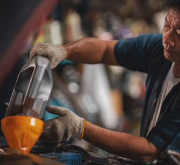
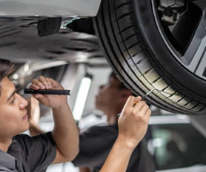
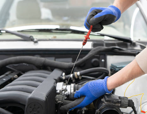
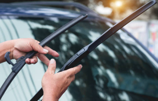
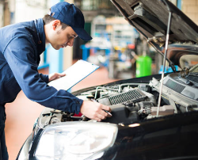

Keep Your Mitsubishi Running Like New

Changing your engine oil every 5,000 – 10,000 km is essential for keeping your engine running smoothly. Fresh oil lubricates engine components, reducing friction and preventing overheating.

Checking your tire pressure monthly helps maintain optimal grip, handling, and fuel efficiency. Uneven or low tire pressure can lead to premature wear, reduced braking performance, and increased risk of tire blowouts.

Regular brake inspections are vital to your safety. Check brake pads, discs, and fluid levels frequently to ensure strong stopping power. Worn brake pads can reduce braking efficiency, increase stopping distances, and damage the rotors.

Worn-out wipers reduce visibility in rainy or foggy conditions, increasing the risk of accidents. Inspect wiper blades regularly and replace them as soon as you notice streaking, skipping, or cracking.
Monitor coolant, brake fluid, and transmission fluid regularly.

Replace air filter every 15,000 – 20,000 km.
Visit our service center for professional maintenance and genuine Mitsubishi parts.
Schedule Service